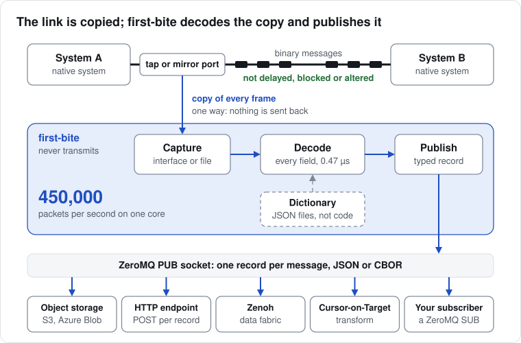
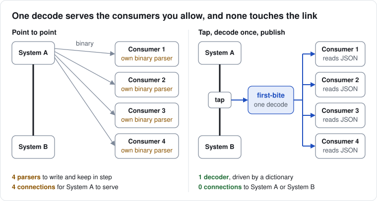
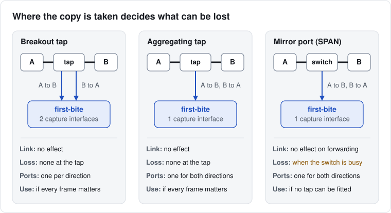
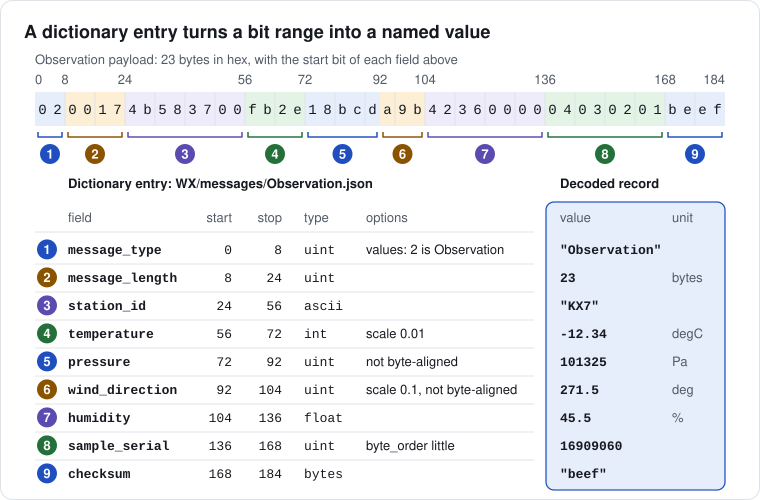
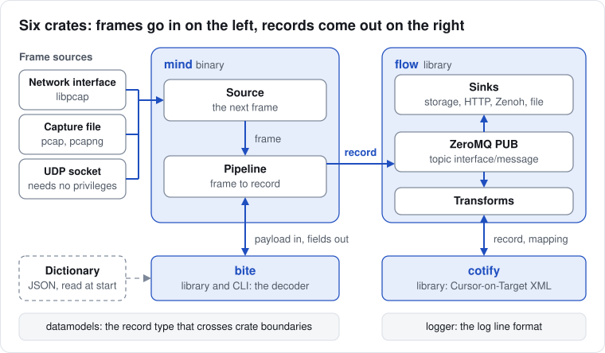

first-bitethe first bite of every byte, before it reaches its addressee
Technical brief
Binary messages off the wire, decoded and published, without touching the link
first-bite listens on a network tap, decodes fixed-layout binary messages against a dictionary, and publishes each one as a JSON record to anyone who subscribes. The systems exchanging the messages are not delayed, blocked or altered.

340,000 / spackets through the whole pipeline on one core
0.3%of one core for a link carrying 1,000 messages per second
0frames sent on the capture interface
Open source, Apache License 2.0github.com/USAREUR-AF/first-bite
1. The problem
The data is on the wire, and only two systems can read it
A fixed-layout binary interface is built for the two systems at its ends. Everyone else who needs the data has to become a third end, and each one that does adds work for the native system and risk to the link.

Four consumers, two ways. Left: each implements the binary interface and connects to a native system. Right: a tap, one decode, and consumers that read JSON.
What opening the interface costs today
A parser per consumer. Each one transcribes the interface document into code: bit offsets, scale factors, value labels. The copies drift apart when the interface changes.
A connection per consumer. The native system has to accept, serve and account for every new peer, and it was sized for the peers it already has.
A change to the operational system. Adding a peer means reconfiguring, retesting and often re-accrediting something that is in use.
A message set frozen into software. When the layout is compiled in, a new field is a new release of every consumer.
What a tap and one decoder change
The native systems are not touched. No new peer, no configuration change, no added load. The copy is taken from the link.
The layout is written once, as data. A dictionary of JSON files holds every bit range and label, with test vectors that prove it.
Consumers read JSON from a socket, or from storage, an HTTP endpoint or a data fabric. Adding the tenth consumer costs the native systems what adding the first did: nothing.
first-bite was built to open up the traffic of a tactical local network that until then was visible only to the systems exchanging it.
first-bitetechnical brief
2. How it works
Tap, decode, publish: it listens, and the link cannot tell
first-bite is one process that reads frames from a capture interface, decodes them and publishes records on a different interface. Nothing it does can reach the link it listens to.
It only reads
The capture interface is opened for reading. first-bite never sends on it, and the interface carries no address and answers no protocol.
There is no way back
On a passive tap there is no path from the monitor ports to the link. Nothing downstream of the tap can delay, block or alter a frame.
It can stop
If first-bite stalls, crashes or is switched off, the link carries on exactly as before. The native systems cannot tell it was there.

Three ways to take the copy. A breakout tap gives each direction its own monitor port; first-bite captures on both interfaces at once and merges the frames in arrival order.
1
Capture. libpcap on one or more interfaces, promiscuous, with an optional kernel filter such as udp port 40100. A capture file or a UDP socket can stand in for the interface.
2
Decode. Find the interface by port and the message by its type field, then extract every field the dictionary names. A packet on a port no interface claims is still published, undecoded.
3
Publish. One JSON record per packet on a ZeroMQ PUB socket, under the topic interface/message. The record also carries the timestamp, addresses, ports and the raw bytes.
first-bitetechnical brief
3. From frame to record
Twenty-three bytes in, nine named values out
The worked example is a test vector that ships with the project: one Observation message from the example weather-station dictionary. Every number in the figure comes from the dictionary file or from decoding these bytes.

One message, field by field. The fields include a signed scaled integer (4), a 20-bit value that is not byte-aligned (5), a float (7) and a little-endian integer (8).
Nothing about a message set is compiled in. A dictionary is a directory of JSON files, loaded once at start, and it carries the test vectors that prove it.
A directory of JSON files
weather-station/
dictionary.json name, version
WX/
metadata.json port, message type
messages/
Heartbeat.json
Observation.json
Position.json
vectors/
observation.json payload, expected values
A message file: each field is a bit range, a type and its labels
{
"description": "Sent every ten seconds while the station is powered.",
"fields": {
"uptime": {"start": 56, "stop": 88, "unit": "s"},
"battery_low": {"start": 88, "stop": 89, "type": "bool"},
"mode": {"start": 90, "stop": 92, "values": {"0": "Idle", "1": "Sampling", "2": "Calibrating"}}
}
}
What a field can be
uint and int of 1 to 64 bits at any alignment, float, bool, bytes and ascii, with a scale and offset, big or little byte order, and msb0 or lsb0 bit numbering. A value can carry labels, and a message is identified by a payload field or by a frame identifier.
Where the vectors come from
Vectors are computed independently of the decoder, by hand or with a few lines of Python, never by pasting the decoder's output. bite check runs every vector each time, and the installer runs the same check and installs nothing if it fails.
A dictionary you may not publish
Point BITE_DICT_PATH at any directory. The public decoder tests a private dictionary without its contents entering the repository.
What bite check catches
error
a file that is not valid JSON or lacks a required key
error
an empty or inverted bit range; an integer wider than 64 bits; a float that is not 32 or 64 bits
error
a text or little-endian field that is not byte-aligned
error
two interfaces claiming one port
failure
a vector that does not decode to what it expects
warning
overlapping fields; a message no type value names; a type value with no message file
The whole pipeline takes 2.9 microseconds per packet on one core, so the decoder is not what limits a deployment. Every figure below was produced by a command in the repository and can be reproduced on your hardware.
Measured
0.69 µs
to decode one message: 1.45 million messages, 9.3 million fields per second
2.9 µs
for the whole pipeline: read a frame, parse Ethernet/IP/UDP, decode, build the JSON record, publish. 340,000 packets per second, over 2,000,000 packets
10.7 MB
resident memory while replaying a 145 MB capture
500 of 500
packets decoded in live capture on two interfaces at once, none dropped
194 to 1,700,000
messages per second: this project's first decoder against the current one, on the same 1,658 recorded messages
How
One core of an AMD Ryzen 7 8845HS, a 2024 laptop-class processor, under Linux, with a release build. The load is the weather-station vectors repeated; the pipeline is one thread.
The cost per packet does not grow with the dictionary: the interface and the message are each one hash lookup.
Not measured
Live capture at high packet rates on a physical tap, where the network card, the kernel buffer and the sinks set the limit. The loss counters on page 8 show when one of them does.
first-bitetechnical brief
6. One decode, many consumers
Decoded once, delivered wherever it is needed
Records leave first-bite on a ZeroMQ PUB socket. A consumer subscribes to the topics it wants, or reads what a sink forwarded. Adding a consumer changes nothing on the tapped link and nothing in the decoder.

The parts.mind is the process; bite is the decoder and knows nothing about networks; flow publishes and forwards.
Where records can go
Destination
How
Status
Any ZeroMQ subscriber
SUB socket with a topic filter
built
S3-compatible storage
sink
built
Azure Blob Storage
sink
built
HTTP endpoint
sink, one POST per record
built
Zenoh data fabric
sink, one key per interface and message
built
Local file
sink
built
Cursor-on-Target
transform, republished on its own socket
built
On a Zenoh fabric
Each record is put under a key built from the deployment and the dictionary, with every part sanitised so a value cannot add a level or a wildcard:
A mapping in the configuration says which decoded fields give the identifier, the type and the position; the transform emits one event per record.
A schema for consumers
bite schema prints a JSON Schema per message, with bounds, labels and units.
first-bitetechnical brief
7. Deployment
One archive beside the link, and nothing to install first
A deployment is a tap, a small host with one or two spare network interfaces, the 16.5 MB mind binary and a dictionary. The binary carries libpcap and ZeroMQ inside it, so the target needs no package installed.
The installer asks no questions, checks the interface, libpcap and the dictionary before it changes anything, and prints what it installed. Settings live in /etc/first-bite/first-bite.env, where a second capture interface is added to FIRST_BITE_INTERFACE; an upgrade keeps them.
Which Linux archive
linux-gnu
the default: Ubuntu 20.04 or later, or any distribution with glibc 2.31 or later
linux-musl
fully static, for a machine with no glibc or an older one: Alpine, busybox, a cut-down system
Prepare the capture interfaces
No address, no ARP, no offloading that merges or splits frames: docs/tap.md has the commands.
Know whether frames were lost
Every minute and at shutdown mind logs one line per interface, at warning level when a count has grown:
capture enp3s0: 1200344 seen by kernel,
0 dropped by kernel, 0 by interface,
0 in queue
Counter grows
Meaning
Do
dropped by kernel
capture buffer full
raise --buffer-mb, add a filter
by interface
card or driver discarded frames
raise the receive ring
in queue
pipeline behind; a sink is blocking
check the sink
The record socket binds loopback by default. To serve other hosts, bind it to an address on a network you trust, never to a capture interface.
first-bitetechnical brief
8. Trust
What you can verify before it goes near a network
Putting a new box beside an operational link is a decision about risk. These are the properties that bound it, and where to check each one.
It listens only
The capture path opens interfaces for reading and has no code that sends on them. On a passive tap the monitor ports have no path back to the link, whatever the software does.
Check: mind/src/source.rs; docs/tap.md.
It runs with two capabilities
The service runs as its own system user with CAP_NET_RAW and CAP_NET_ADMIN and no others. Its configuration is readable by root and that user only, because it can hold storage credentials.
Check: deployment/first-bite.service.
The record socket is yours to place
The ZeroMQ socket is unauthenticated and unencrypted, so it binds 127.0.0.1 by default. Access control and encryption come from the transport you forward to: the Zenoh sink joins a fabric with the TLS certificate the fabric issued to it.
Check: docs/deployment.md, "The record socket".
The build is checked and traceable
Every code change is formatted, linted with warnings as errors, and tested on Linux and macOS. Dependencies pass a licence policy (cargo-deny) and an advisory scan (cargo-audit). Each release carries an SPDX SBOM, checksums and a build provenance attestation.
Check: gh attestation verify <archive>.
It builds without the internet
make vendor copies every dependency into the tree, and the offline machine builds with cargo build --locked --offline. What you review is what you run.
Check: docs/deployment.md, "Build without internet access".
The licence is Apache-2.0
Use, modify and redistribute it, including inside a closed system. The repository holds the decoder, the pipeline, the sinks and three synthetic example dictionaries.
It holds no dictionary for a restricted message set, no capture of real traffic and no identifier of a real deployment; a gate in CI refuses them.
systemd unit (verified; not yet run under systemd)
built
Not yet
Status
64-bit Arm Linux, macOS and Windows archives
built in CI; not run locally
Decoder library for iOS and Android
compile-checked
SocketCAN capture source
designed, not built
Typed records and schemas published on the fabric
designed, not built
Which interface, and so which direction, a record came from
not built
Reassembly of fragmented IP datagrams and TCP streams
not built
Hardware timestamps; DBC import; MIL-STD-1553 and ARINC 429 sources
not built
Try it in five minutes
make build
cargo run -p bite -- check dictionaries/weather-station
cargo run -p mind -- \
--pcap-file examples/weather-station.pcap \
--dictionary dictionaries/weather-station --output
Needs a Rust toolchain, a C/C++ compiler, CMake and the libpcap headers. The last command replays a capture through the whole pipeline and publishes on tcp://*:12000.
To put it on a link
Write the dictionary for your interface, with vectors.